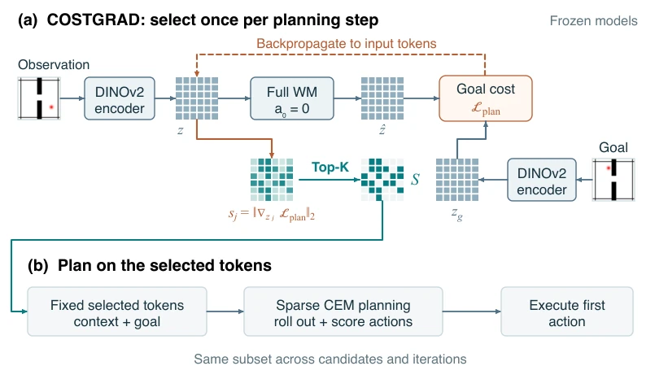
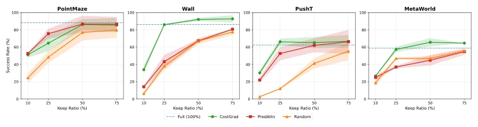
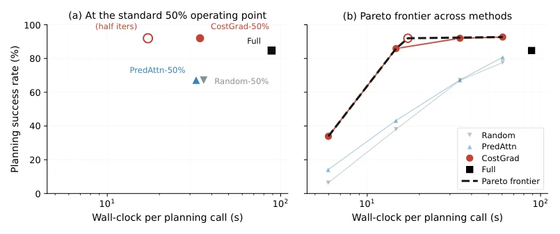
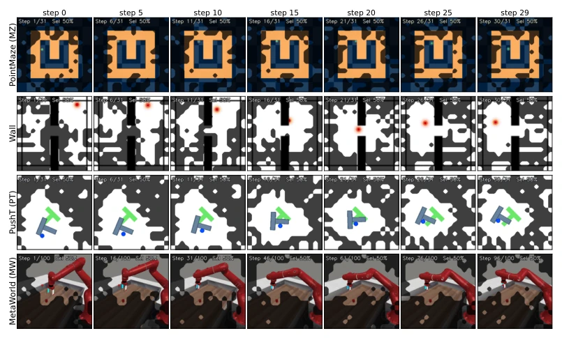
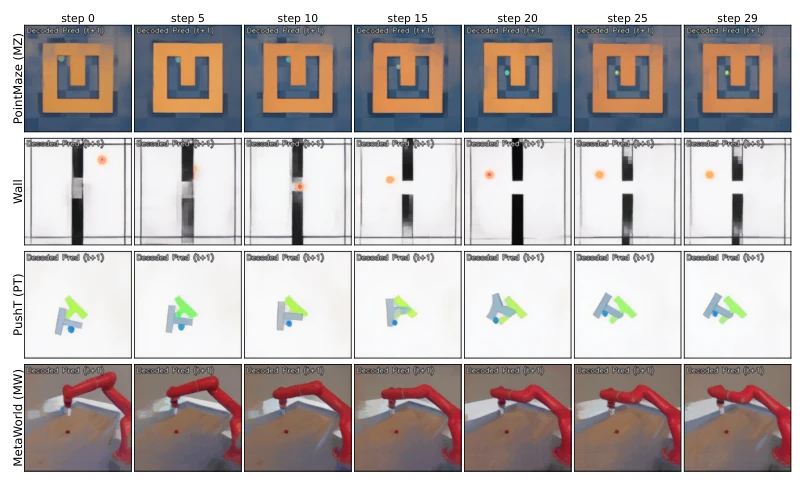

This paper pours cold water on "sparse world models" while simultaneously handing over a golden key. COSTGRAD's core logic is compelling: regardless of prediction accuracy, only care about which tokens are most important for achieving the goal. Under the AdaLN architecture, it indeed achieved "doing better things with half the compute", even overturning the full-token baseline, which is simply a "dimensionality reduction strike" in the field of inference acceleration. But the authors did not play dumb, directly revealing: this trick fails directly under the Concat architecture, even worse than random selection. This is not a general algorithm at all, clearly an "architecture adapter that tailors to specific contexts". It reveals a cruel truth about sparse planning: what tokens to select is indeed important, but how the model "digests" these tokens is the critical point. If the model architecture itself is sensitive to missing information, even the most exquisite gradient selection is a castle in the air. This paper not only proves the necessity of "goal-oriented" approaches but also severely challenges "one-size-fits-all" sparsification.
研究动机Motivation
基于 Token 的世界模型（如 DINO-WM [Zhou et al., 2025] 和 JEPA-WMs [Terver et al., 2025]）虽然能进行细粒度的潜在规划，但推理时处理庞大的空间 Token 网格（如 16x16）导致计算成本极高。现有的稀疏规划方法（如 Sparse Imagination [Chun et al., 2025]）多依赖随机选择或训练时的稀疏化，缺乏针对当前目标的动态选择能力。更关键的是，直接复用预测信号（如注意力权重或预测误差）存在“目标不匹配”问题（Objective Mismatch）：预测误差高不代表对控制重要，注意力权重往往被预测任务主导而非控制任务 [Lambert et al., 2020]。例如，一个运动轨迹可预测的物体（预测误差低）可能恰恰是控制的关键，而预测误差方法会错误地忽略它。因此，亟需一种无需重新训练、能直接利用规划目标本身来筛选关键 Token 的方法，以解决计算昂贵与任务相关性之间的错位。
Token-based world models (such as DINO-WM [Zhou et al., 2025] and JEPA-WMs [Terver et al., 2025]) can perform fine-grained latent planning, but processing large spatial token grids (e.g., 16x16) during inference leads to extremely high computational costs. Existing sparse planning methods (such as Sparse Imagination [Chun et al., 2025]) mostly rely on random selection or sparsification during training, lacking dynamic selection capabilities targeting current goals. More critically, directly reusing prediction signals (such as attention weights or prediction errors) suffers from an "Objective Mismatch" problem: high prediction error does not imply importance for control, and attention weights are often dominated by prediction tasks rather than control tasks [Lambert et al., 2020]. For example, an object with a predictable motion trajectory (low prediction error) might be exactly the key to control, while prediction error methods would incorrectly ignore it. Therefore, there is an urgent need for a method that requires no retraining and can directly utilize the planning goal itself to filter key tokens, to resolve the misalignment between computational cost and task relevance.
COSTGRAD proposes a "select then compute" training-free Token selection framework, with the overall process divided into two stages: 1. Key Token Selection: At the beginning of the planning step, use a zero action (a0=0) as a probe, input current observation and encoded goal, perform one forward pass through the pre-trained world model, calculate the gradient norm of the planning cost (L2 distance between predicted state and goal state) with respect to each input Token. Sort all Tokens based on the magnitude of gradient norms, retain the Top-K high-sensitivity Tokens, forming a fixed sparse subset S. 2. Sparse Planning: In the subsequent Cross-Entropy Method (CEM) search, only use the selected subset S for autoregressive rollout and cost evaluation of action sequences. This subset remains unchanged across all candidate sequences and iterations of CEM, only re-selected upon the next frame observation. The innovations lie in: first, it abandons prediction error or attention as proxies, directly utilizing the gradient of the downstream control goal (Planning Cost) as a measure of Token importance, resolving the misalignment between prediction and control; second, it has extremely low computational overhead, requiring only one additional forward/backward pass, reducing attention computation from quadratic complexity, significantly accelerating the CEM process; finally, the method is completely training-free, directly acting on frozen pre-trained models, and the selection process is goal-conditioned, capable of dynamically adapting to different task requirements.

Figure 1: COSTGRAD: select once, then plan on the selected tokens. (a) A full-token, zero-action probe supplies planning-cost gradients to select top-K positions S for context and goal. (b) CEM searches for actions using only S, then executes the first action. The subset stays fixed throughout action search and is reselected at the next observation; model weights remain frozen. Token grids are schematic; proprioception is omitted.
The authors conducted evaluations on four continuous control benchmarks: PointMaze, Wall, PushT, MetaWorld. Baselines include Full Token (Full), Random Selection, Prediction Attention-based (PREDATTN), Prediction Gradient-based (PREDGRAD), and ToMe. Results show that at 50% sparsity, COSTGRAD significantly surpasses the Full Token baseline on Wall, PushT, MetaWorld (average improvement 3.8%), remains comparable on PointMaze, while achieving 2.6x inference acceleration. If combined with reduced CEM iteration counts, the total speedup ratio can reach 5x. Ablation studies find that COSTGRAD's selection has task relevance (e.g., channels in Wall, pusher in PushT), and is more stable than prediction error methods. However, the core finding is architecture dependency: it performs excellently under AdaLN architecture, but under the matching Concat architecture, COSTGRAD fails or is even worse than random selection. Attribution analysis indicates this is because Token removal under Concat architecture leads to larger "Action-pathway drift", meaning the model's response distribution to actions undergoes drastic changes, destroying the validity of planning.

Figure 2: Sparsity sweeps on four environments. Planning success (%) vs. keep ratio for COST- GRAD, PREDATTN, and Random; horizontal dashed line is Full (100%). Shaded bands: ±1 std across 3 evaluation seeds at keep ratios 10/25/75 (96 episodes per cell per seed); the 50% point uses Table 1’s 3-eval-seed mean. COSTGRAD approaches or exceeds Full at 25% tokens on three of four environments (Wall, PushT, MetaWorld); the gap to prediction-derived baselines (PREDATTN, Random) widens as sparsity increases. All sparse methods degrade sharply below ∼25%.

Figure 3: Wall speed–success trade-off on AdaLN-Zero. (a) Five canonical operating points at the standard K=128 sparse setting. COSTGRAD-50% with 15 CEM iterations achieves the same mean success as standard COSTGRAD-50% while reducing planning time to ∼17 s, a 5.2× speedup over Full. (b) Pareto frontier across methods at 30 CEM iterations, plus the COSTGRAD K=128, 15-iteration point. Among measured points, the non-dominated frontier is traced by COSTGRAD configurations; Full, PREDATTN, and Random are dominated. Timing details and the full (K, iters) marker convention are in Appendix K and Appendix H.

Figure 4: COSTGRAD selection across environments. Per-row: selection overlay at seven timesteps through one episode (bright = kept, dim = dropped, 50% kept throughout). COSTGRAD adapts to each environment’s task structure: maze corridors on PointMaze, agent and wall on Wall, T-block and pusher on PushT, arm and object on MetaWorld. Decoded one-step predictions from the same sparse token sets are in Appendix C.

Figure 5: Decoded one-step predictions from COSTGRAD-50% sparse tokens. Per-row: the predictor’s decoded t+1 output at seven timesteps through one episode, when only the top-128 COSTGRAD-scored tokens are kept (corresponding to the selection overlays in Figure 4).